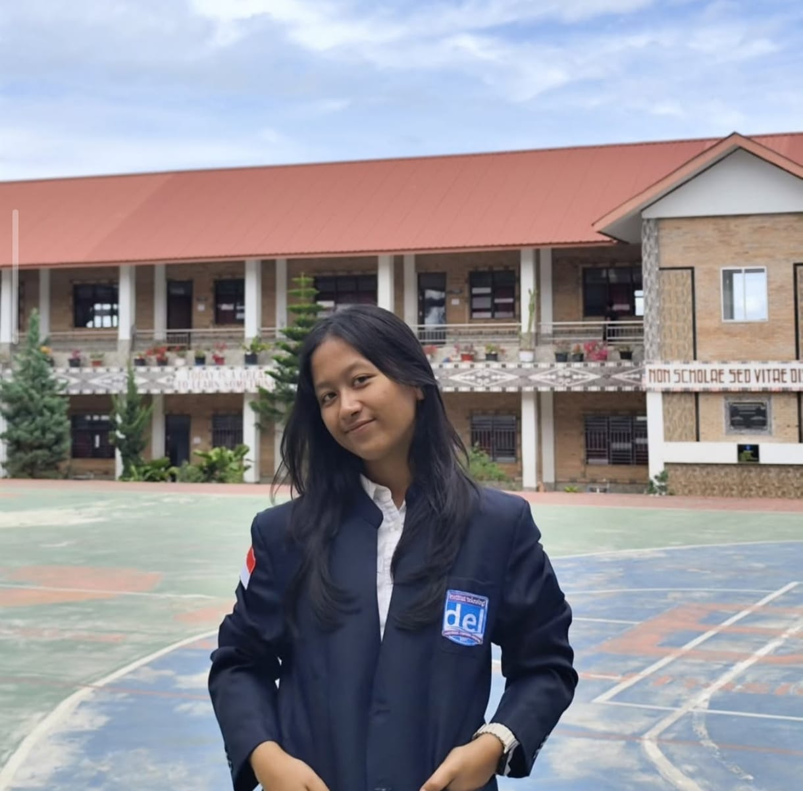

Saya adalah mahasiswa Program Studi Teknologi Rekayasa Perangkat Lunak di Institut Teknologi Del yang memiliki minat besar dalam pengembangan frontend dan desain antarmuka web. Saya senang membuat tampilan website yang bersih, menarik, dan mudah digunakan oleh pengguna.
Menggunakan HTML, CSS, dan JavaScript untuk membuat tampilan website yang menarik, responsif, dan mudah digunakan.
Mengembangkan aplikasi web menggunakan framework Laravel dengan konsep MVC dan pengelolaan database.
Mendesain tampilan antarmuka website yang bersih, modern, dan fokus pada pengalaman pengguna.
Membuat website yang dapat berjalan dengan baik di berbagai ukuran layar seperti laptop, tablet, dan smartphone.
Mampu menganalisis masalah dan menemukan solusi yang efektif.
Mampu menghasilkan ide baru dalam pengembangan desain dan solusi teknologi.
Mampu bekerja sama dengan anggota tim dalam menyelesaikan proyek.
Mudah mempelajari teknologi baru dan terus mengembangkan kemampuan.
Sarjana Terapan Teknologi Rekayasa Perangkat Lunak (TRPL)
2024 - Sekarang
Mengembangkan aplikasi manajemen cafe berbasis web menggunakan Laravel dengan fitur manajemen produk dan transaksi.
Mencoba berbagai bahasa pemrograman untuk memperkuat logika dan membuat proyek kecil sebagai latihan teknis.
Email: novasimanjuntak57@gmail.com
Phone: 081376860127
Lokasi: Sumatra Utara
LinkedIn: linkedin.com/in/novawindyana